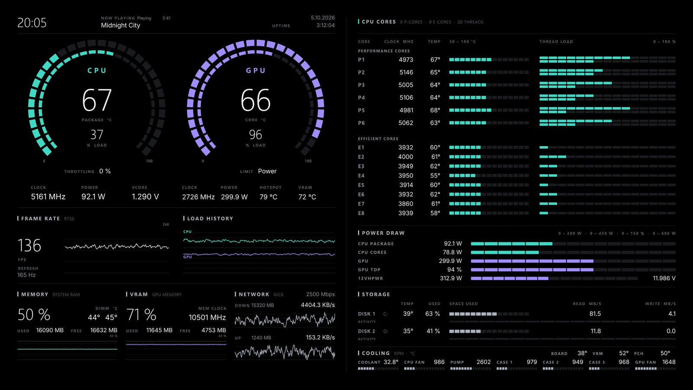

Modern Split · builder
Summary on the left, every detail on the right
CPU and GPU rings, frame rate, load, memory and network on one half. Each P- and E-core with its clock, temperature and thread load, plus power draw, both drives and every fan, on the other. Pick the sensors, colours, resolution and Windows scale, watch the live preview, then export the .sensorpanel file.